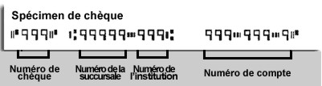

Ajouter le numéro de téléphone mobile
Le champs marqués d’un astérisque (*) sont obligatoires.
"Détails de la page"
- Identificateur d'écran :
- SBT F 031
- Date de modification :
Cette page renferme de l’information générale au sujet de la pension de retraite du Régime de pensions du Canada (RPC). En cas de différence entre le contenu de cette page et le Régime de pensions du Canada (loi), la loi a toujours préséance.
Vous pouvez commencer à recevoir votre pension de retraite dès le premier mois suivant votre 60e anniversaire, jusqu’au mois précédant votre 70e anniversaire.
Vous devez faire la demande au moins un mois avant la date à laquelle vous souhaitez commencer à recevoir votre pension de retraite. Le paiement de la pension commencera un mois après la date indiquée sur votre demande, si nous recevons la demande à temps.
Si vous décidez de commencer à recevoir des prestations de retraite avant d’avoir 65 ans, votre pension de retraite sera réduite d’un certain pourcentage jusqu’à votre décès. Ce pourcentage est déterminé par le nombre de mois qui séparent la date à laquelle vous faites la demande et votre 65e anniversaire.
Le pourcentage de réduction est basé uniquement sur l’année au cours de laquelle vous commencez à recevoir une pension, et il demeurera toujours le même.
Votre pension pourrait augmenter chaque année en fonction des variations de l’Indice des prix à la consommation.
Si vous commencez à recevoir votre pension à l’âge de 65 ans, vous recevrez le plein montant auquel vous avez droit, en fonction de vos gains et de vos cotisations. Vous commencerez à recevoir votre pension le mois suivant votre 65e anniversaire.
Vous pouvez repousser votre pension de retraite jusqu’à ce que vous ayez 70 ans. Si vous décidez de la repousser, votre prestation sera augmentée d’un certain pourcentage. Ce pourcentage est basé sur le nombre de mois qui séparent votre 65e anniversaire et la date à laquelle vous faites la demande. Il n’y a pas davantage financier à repousser la pension au-delà de 70 ans.
C’est vous qui décidez quand vous commencerez à recevoir une pension de retraite du RPC. Votre décision dépendra de votre situation. Vous devez prendre en considération les points suivants:
Pour obtenir des renseignements sur les pensions publiques du Canada ou de l’aide afin d’évaluer vos besoins en matière de revenu de retraite, vous pouvez utiliser la calculatrice du revenu de retraite canadienne.
Si vous êtes âgés de 60 à 70 ans et occupez un emploi ou retournez travailler au Canada (sauf au Québec) tout en recevant une pension de retraite du Régime de pensions du Canada ou du Régime des rentes du Québec, vous pourriez être admissible à une pension après-retraite.
La prestation d’après-retraite vous permettra d’augmenter votre revenu de retraite même si vous touchez déjà le montant maximum de la pension de retraite du Régime de pensions du Canada. Il s’agit d’une prestation mensuelle garantie dont le montant augmentera en fonction de la hausse du coût de la vie et qui vous sera versée jusqu’à votre décès.
Vous n’avez pas à faire de demande pour recevoir la prestation après-retraite. Si vous y avez droit, elle vous sera versée automatiquement.
Pour chaque année au cours de laquelle vous versez une cotisation valide au Régime de pensions du Canada tout en touchant votre pension de retraite, vous devenez admissible à une nouvelle prestation après-retraite à compter de janvier de l’année suivante. Comme pour la pension de retraite du Régime de pensions du Canada, le montant de la prestation après-retraite varie en fonction de vos gains, du montant de vos cotisations au Régime au cours de l’année précédente et de votre âge au moment de la date de prise d’effet de la prestation après-retraite.
Toute nouvelle prestation après-retraite sera combinée aux prestations après-retraite antérieures et ajoutée à toute autre prestation du Régime de pensions du Canada à laquelle vous avez droit.
Si vous travaillez durant l’année au cours de laquelle vous commencez à recevoir votre pension de retraite, nous déterminerons la portion des cotisations qui s’applique à la pension de retraite et celle qui s’applique, le cas échéant, à la prestation après-retraite.
Si vous avez moins de 65 ans, que vous travaillez et que vous recevez une pension de retraite du RPC, votre employeur et vous devez cotiser à la prestation après-retraite. Si vous êtes travailleur autonome, vous devez faire une cotisation équivalant à la part de l’employeur et à celle de l’employé.
Si vous êtes âgé de 65 ans et plus, vous avez le choix de cotiser ou non. Pour en savoir plus, communiquer avec l’Agence du revenu du Canada. À partir de 70 ans, vous ne pouvez plus faire de cotisations.
Les cotisations applicables à la prestation après-retraite ne donnent pas droit à d’autres prestations du Régime de pensions du Canada, et elles n’augmentent pas le montant de ces prestations. De plus, la prestation après-retraite ne peut pas être partagée avec un ancien époux (partage des crédits de pension) ni avec un époux actuel (partage de la pension).
Pour obtenir d’autres renseignements au sujet de la prestation après-retraite, veuillez consulter le site Web de Canada.gc.ca..
Si vous travaillez au Québec pendant que vous recevez une pension de retraite du Régime de pensions du Canada ou du Régime des rentes du Québec, vous pouvez communiquer avec Retraite Québec pour en apprendre davantage sur les cotisations au Supplément à la rente de retraite (Québec).
Vous n’avez pas besoin de fournir une preuve de naissance avec votre demande. Toutefois, le Régime de pensions du Canada a le droit de demander une preuve de naissance en tout temps, sil le juge nécessaire.
Le dépôt direct est le moyen le plus rapide, le plus sécuritaire et le plus fiable de recevoir vos prestations du RPC. Presque tous les bénéficiaires du RPC reçoivent leurs prestations par dépôt direct.
Si votre demande est approuvée, vos paiements mensuels seront déposés dans votre compte à votre institution financière. Le compte doit être en votre nom. Un compte conjoint est également acceptable.
Afin de vous inscrire au dépôt direct, vous devez fournir le numéro de la succursale (transit), le numéro de l’institution et le numéro de compte. Ces renseignements se trouvent dans votre livret bancaire, sur un relevé bancaire ou au bas de vos chèques personnalisés.
Si vous désirez recevoir un chèque mensuel, veuillez annuler votre demande en ligne. Vous devez ensuite remplir un formulaire de Demande de pension de retraite du RPC et l’envoyer à Service Canada.

Numéro de chèque : La première série de chiffres sur vos chèques personnalisés constitue votre numéro de chèque personnel, composé de trois chiffres. N’inscrivez pas ce numéro.
Numéro de succursale : La deuxième série de chiffres sur vos chèques personnalisés ou la première série de chiffres sur vos chèques non personnalisés constitue votre numéro de succursale, composé de cinq chiffres. Inscrivez ce numéro dans le premier champ.
Numéro d’institution : La prochaine série de chiffres constitue votre numéro d’institution, composé de trois chiffres. Inscrivez ce numéro dans le deuxième champ.
Numéro de compte : La dernière série de chiffres constitue votre numéro de compte bancaire. Le nombre de chiffres varie d’une institution financière à l’autre. Inscrivez ce numéro dans le troisième champ.
Si vous demandez à recevoir vos feuillets de renseignements fiscaux en ligne, vous pourrez y accéder en ligne chaque année, au début de février. Vous ne recevrez pas d’avis lorsqu’ils seront disponibles.
À tout moment, si vous préférez recevoir vos feuillets de renseignements fiscaux par la poste, vous pouvez ajuster vos options d’expéditions de vos feuillets de renseignements fiscaux dans MSCA.
Votre pension de retraite du RPC est considérée comme un revenu et elle est imposable.
Vous pouvez demander que Service Canada retienne l’impôt fédéral sur votre pension et vos prestations mensuelles. La retenue peut être indiquée en dollars ou en pourcentage de la prestation totale.
Si vous choisissez d’indiquer un montant en dollars ($), le chiffre dont contenir une virgule décimale, et le montant avec les cents, par exemple, 75,00 $.
Si vous indiquez un pourcentage, il ne doit pas dépasser 100. Remarque si vous choisissez d’indiquer un pourcentage, la retenue s’appliquera au montant mensuel total versé en prestations du RPC et de la SV.
Service Canada continuera d’effectuer la retenue de l’impôt fédéral de vos paiements tant et aussi longtemps que vous recevrez ces prestations, à moins que vous en décidiez autrement Vous pouvez mettre un terme à la retenue ou changer le montant en choisissant « Retenue volontaire d’impôt fédéral pour le RPC et la SV » dans Mon dossier Service Canada.
Si vous avez vécu ou travaillé au Canada et dans un autre pays, ou si vous êtes le survivant d’une personne qui a vécu ou travaillé au Canada et dans un autre pays, vous pourriez être admissible à une pension ou à d’autres prestations du Canada et/ou de l’autre pays en vertu d’un accord sur la sécurité sociale. Pour plus amples renseignements, veuillez consulter la page des Prestations internationales.
Vous pouvez nommer une personne (par exemple, votre époux, un membre de votre famille, un ami ou votre comptable) qui communiquera en votre nom avec Service Canada au sujet de vos prestations du RPC.
La personne que vous autorisez peut communiquer avec Service Canada au sujet de votre retenu, de vos paiements du RPC et de vos cotisations au RPC. Ils peuvent communiquer avec Service Canada pour signaler votre changement d’adresse et de numéro de téléphone.
La personne n’est PAS autorisée à :
Votre consentement demeurera valide jusqu’à ce que vous l’annuliez. Vous pouvez changer, arrêter ou ajouter d’autres personnes autorisées à tout moment dans MSCA.
Si les dossiers de Service Canada indiquent qu’un représentant légal, tel qu’un fiduciaire ou une personne ayant une procuration, est autorisé à agir en votre nom, nous communiquerons uniquement avec ce représentant légal.
Si vous vous êtes absenté du travail ou avez moins travaillé pour vous occuper de vos jeunes enfants, vous pourriez être en mesure de faire augmenter le montant de votre pension du RPC et d’autres prestations du RPC grâce à la clause pour élever des enfants.
Pour ajouter des enfants à l’aide de ce service en ligne, toutes les conditions suivantes doivent être entièrement remplies :
Si l’une de ces conditions n’est pas entièrement remplie, vous ne pouvez pas utiliser ce service pour demander la clause pour élever des enfants. Si vous répondez partiellement à chacune des conditions, vous pouvez quand même présenter une demande en remplissant le formulaire Clause pour élever des enfants, Régime de pensions du Canada et en nous le faisant parvenir par la poste.
Si, en raison d’un problème médical, vous n’avez pu présenter une demande plus tôt ou encore vous n’avez pu demander à quelqu’un de le faire en votre nom, veuillez communiquer avec nous pour obtenir le formulaire Déclaration dincapacité. Retournez-nous le formulaire dûment rempli. Si vous répondez aux critères d’admissibilité, vous pourriez demander que la date de début des prestations soit modifiée pour indiquer une date antérieure.
Le champs marqués d’un astérisque (*) sont obligatoires.